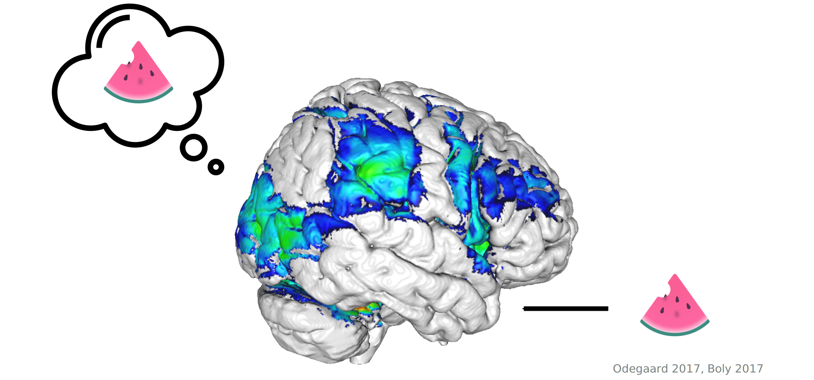
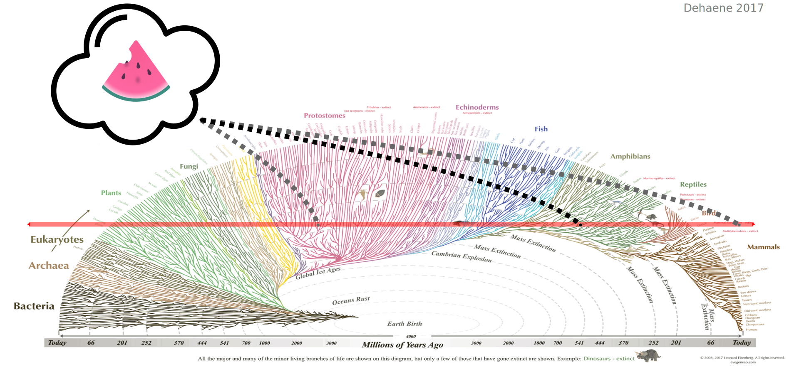

Wie entstehen eindeutige bewusste Erfahrungen aus doppeldeutigen sensorischen Daten?
Öffentlich-wissenschaftlicher Vortrag
Dr. med. Veith Weilnhammer
Habilitation aus der Klinik für Psychiatrie und Psychotherapie am Campus Charité Mitte
Direktor: Prof. Dr. med. Dr. phil. Andreas Heinz
Subjektivität

- Wie entstehen subjektive Erfahrungen aus physischen Prozessen?
Mechanismen

- Was sind die neuronalen Korrelate bewusster Wahrnehmung?
Voraussetzungen

- Was sind die Grundbedingungen bewusster Erfahrungen?
Funktion

- Welche evolutionäre Funktion erfüllt das Bewusstsein?
Erkennen

- Wie können wir bewusste Wahrnehmung außerhalb des menschlichen Gehirns erkennen?
5 Fragen

Wie entstehen eindeutige bewusste Wahrnehmungen aus doppeldeutigen sensorischen Daten?
Bistabile Wahrnehmung
Bistabile Wahrnehmung
Bistabile Wahrnehmung
Bistabile Wahrnehmung
fMRT + TMS

fMRT + TMS
fMRT + TMS

fMRT + TMS

fMRT + TMS

Neuronale Korrelate
Der präfrontale Kortex moduliert die Umwandlung doppeldeutiger sensorischer Signale in eindeutige bewusste Wahrnehmungen.Halluzinationen
Können Halluzinationen durch ein Ungleichgewicht zwischen Feedforward and Feedback erklärt werden?Paranoide Schizophrenie

Halluzinationen
Patient:innen mit der Diagnose paranoider Schizophrenie sind empfindlicher für doppeldeutige sensorische Reize.Zusammenfassung
Vielen Dank für Ihre Aufmerksamkeit!
Literatur
Weilnhammer, Stuke, Hesselmann, Sterzer, Schmack. A Predictive Coding Account of Bistable Perception. PLOS Computational Biology 2017.
Weilnhammer, Stuke, Sterzer, Schmack. The Neural Correlates of Hierarchical Predictions for Perceptual Decisions. Journal of Neuroscience 2018.
Weilnhammer, Lukas, Eckert, Stuke, Heinz, Sterzer. Psychotic Experiences in Schizophrenia and Sensitivity to Sensory Evidence. Schizophrenia Bulletin 2020.
Weilnhammer, Fritsch, Chikermane, Eckert, Kathak, Stuke, Sterzer. An Active Role of Inferior Frontal Cortex in Conscious Experience. Current Biology 2021.
Weilnhammer, Chikermane, Sterzer. Bistable perception alternates between internal and external modes of sensory processing. iScience 2021.